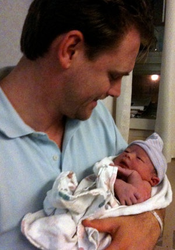
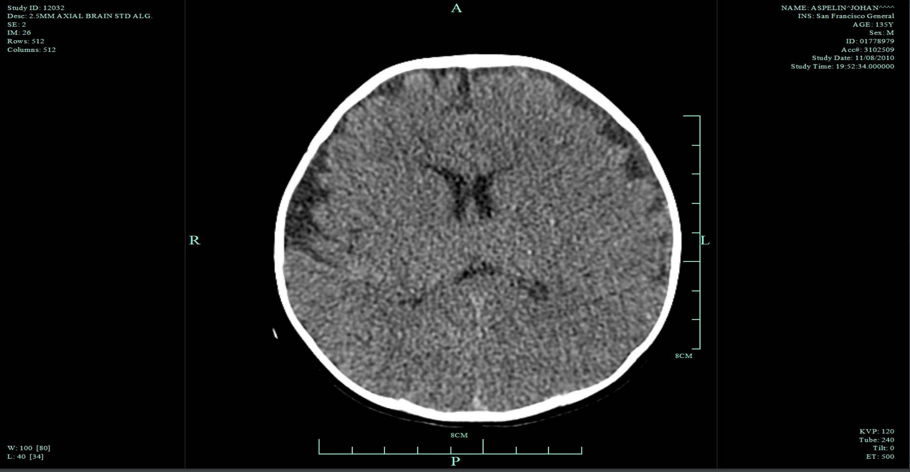
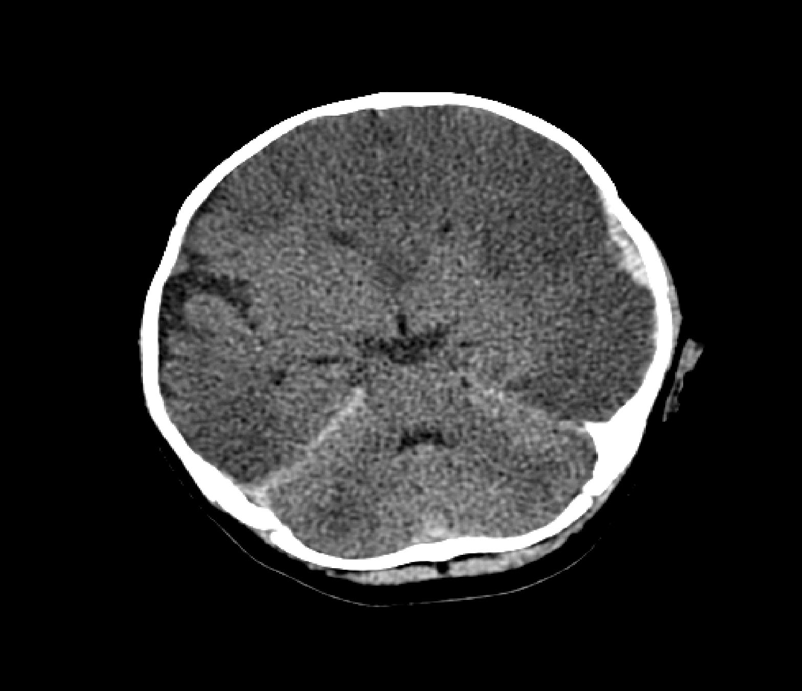
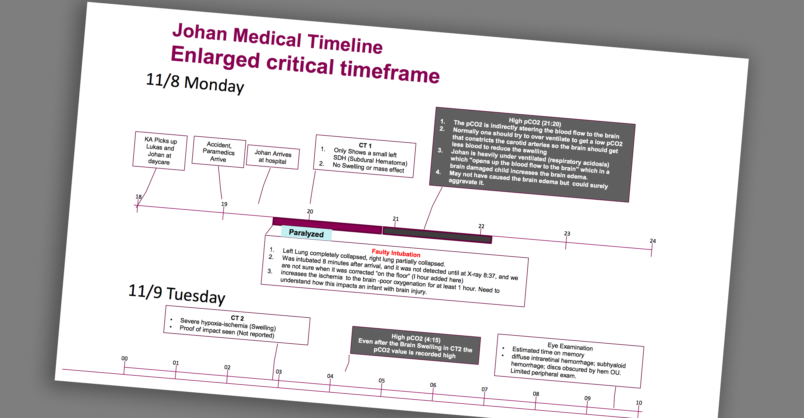
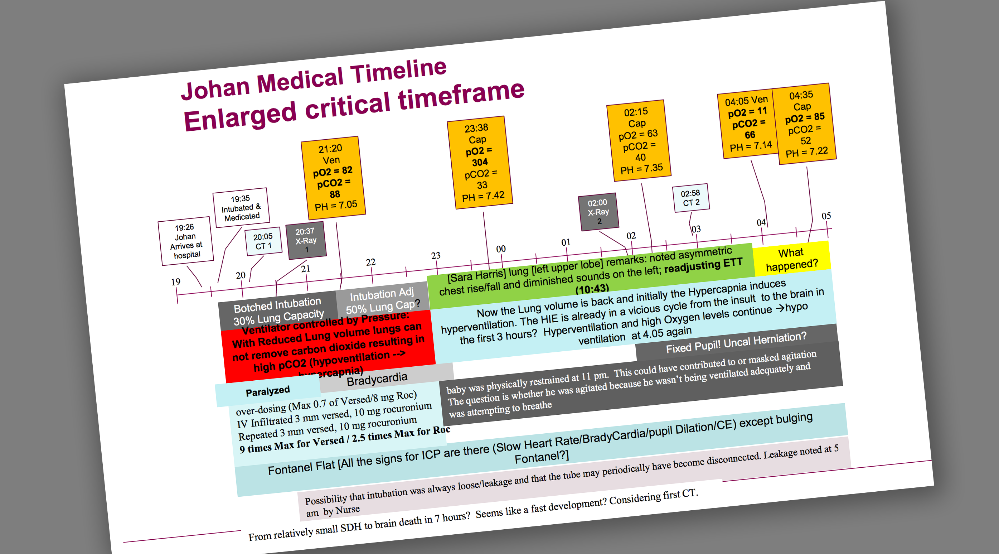
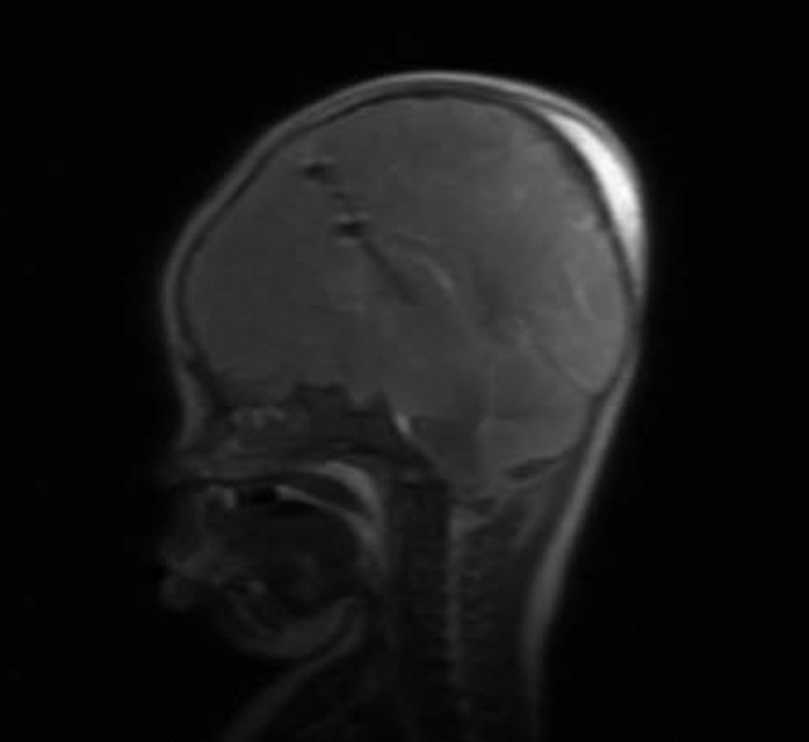
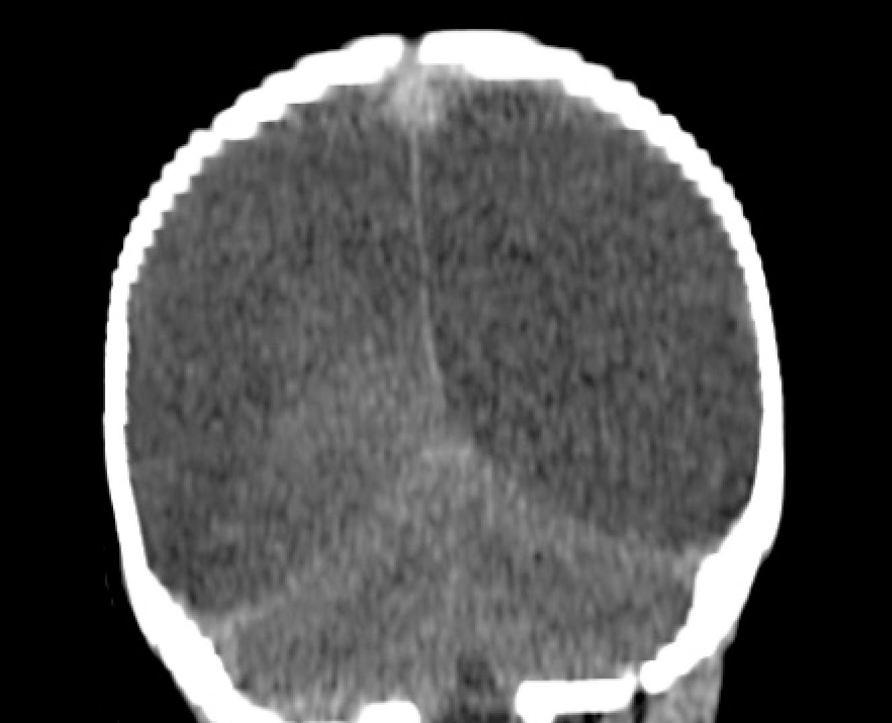

Peter Aspelin est un médecin suédois et un professeur de radiologie à l'Institut Karolinska à Stockholm (« l'un des centres de recherche médicale les plus réputés d'Europe et du monde [qui] décerne tous les ans le prix Nobel de physiologie ou médecine »).
Le fils de Peter Aspelin, Kristian, vit à San Francisco. En 2010, alors qu'il avait quatre mois, le bébé de Kristian Aspelin prénommé Johan a fait une chute et il a été hospitalisé. Kristian Aspelin a été accusé à tort de maltraitance suite à la découverte d'un hématome sous-dural, d'hémorragies rétiniennes, et d'un œdème cérébral chez Johan. Il s'agit en effet de la « triade » de lésions qui est caractéristique du syndrome du bébé secoué. Kristian Aspelin a été placé brièvement en détention provisoire. Clamant son innocence et souhaitant comprendre ce qu'il s'était passé, il est parvenu avec d'extrêmes difficultés à obtenir l'intégralité du dossier médical de l'hôpital. Avec l'aide de son père médecin, il a alors découvert l'existence d'une succession de graves erreurs médicales conduisant finalement à la mort du bébé. Au bout de plusieurs années, Kristian Aspelin a finalement été innocenté et toutes les charges d'accusation ont été définitivement abandonnées.
Ce drame a conduit Peter Aspelin à s'interroger sur la validité du diagnostic de maltraitance lorsqu'il ne se base que sur les lésions de la « triade » et qu'il ne prend pas en compte les causes médicales ou accidentelles possibles. Nous proposons ici une traduction d'un discours qu'il a prononcé lors d'un symposium sur les nouvelles perspectives en droit, médecine, psychologie, et statistiques au sujet de la maltraitance infantile, organisé à l'Université du Michigan aux États-Unis le 6 novembre 2015.
Sources :
- Site du symposium
- Transcript original du discours (qui contient toutes les références scientifiques soutenant les propos de l'auteur)
- Diapositives accompagnant le discours
- Article d'une journaliste détaillant toute l'histoire de Johan
- Documentaire en préparation
Un signe médical peut-il prédire une relation causale ? Comment raisonner sur des cas possibles de maltraitance infantile
C'est seulement la deuxième fois que je parle de maltraitance infantile. La première fois a eu lieu il y a quelques mois devant la Cour suprême suédoise. J'avais alors expliqué que je ne pouvais pas témoigner sur un cas individuel parce que je ne suis pas, malgré mon métier de radiologue, un spécialiste de maltraitance infantile. Mais j'ai expliqué que j’étais expérimenté en matière de « médecine fondée sur des preuves ». J'ai donc eu l'occasion de témoigner devant la Cour suprême et j'ai contribué à modifier le verdict de l'affaire. Cette décision a créé des remous en Suède sur la manière de traiter le sujet de la maltraitance infantile et du syndrome du bébé secoué (SBS). Je pense que c'est donc pour cela que j'ai été invité ici. Je vais vous raconter quel a été mon raisonnement lorsque j'ai abordé le sujet de la maltraitance infantile il y a tout juste quatre ans.
 J'ai une information à divulguer. J'ai un fils qui a été accusé d'avoir secoué son fils, mon petit-fils Johan, et je vais en parler un peu en relation avec le thème de ce jour. Ce sera évoqué comme « le cas de Johan ». Après plus de trois ans, toutes les accusations ont été abandonnées. Je veux d'abord souligner que je crois personnellement qu'un secouement violent peut gravement blesser un enfant. J'ai entendu Patrick Barnes dire la même chose. Je crois que certains cas que l'on m'a présentés au fil des années ont impliqué un secouement violent. Il faut que les pédiatres recherchent les signes de maltraitance. Faisons donc en sorte que ces faits ne soient jamais oubliés.
J'ai exercé différentes activités d'analyse et d'évaluation scientifique, en particulier pendant les sept années où j'ai été président du comité scientifique du Conseil Suédois de l'Evaluation des Technologies de Santé, dont la mission principale est de promouvoir une médecine fondée sur des preuves. Donc, en résumé, je ne suis pas un spécialiste du diagnostic du SBS, mais je suis expérimenté en matière d'évaluation de la recherche et en particulier s'agissant de la médecine fondée sur des preuves.
Le problème scientifique est le suivant : avec quelle certitude est-ce qu'une lésion ou une constatation occulte peut prédire une relation de cause à effet ? Je vous invite maintenant à suivre mon mode de raisonnement. Après que mon fils a été accusé, j'ai commencé à analyser les éléments de preuves sur lesquels était fondé le SBS. Avant cela, je n’avais aucun doute sur la théorie. Comme Patrick l'a dit, j'ai été formé dans une faculté de médecine : si vous avez la triade — hémorragies rétiniennes, hématome sous-dural, et œdème cérébral – c'est le syndrome du bébé secoué. Tout a commencé en fait avec une très vague hypothèse de Guthkelch qui a été théorisée par Caffey et qui s'est développée dans le cadre de la maltraitance infantile – le syndrome de l'enfant battu — déjà suggéré en 1962. Au fil du temps, cela a évolué vers une théorie d'une relation de cause à effet pathognomonique. Voici le très bref historique de ce qui explique pourquoi nous sommes tous ici aujourd'hui.
J'ai commencé à examiner les éléments de preuve du SBS. Une conclusion pathognomonique en médecine signifie qu'elle est tellement définitive qu'elle définit elle-même le diagnostic – elle est automatique, et rien d'autre ne peut l'expliquer. Quels sont les éléments de preuve que la triade est pathognomonique d'une maltraitance infantile, et quelle est la valeur prédictive positive de la triade ? J'ai commencé à analyser les éléments de preuve à ce sujet. Il y a sûrement beaucoup de gens qui se disent, « Pourquoi une conférence comme celle-ci a-t-elle lieu ? » Y a-t-il une controverse ? « Non, » disent-ils, « Il n'y a pas de controverse, juste quelques fous qui ne sont pas d'accord avec nous. » Mais ma réponse est que oui, il y a une controverse. Il existe de nouveaux éléments pour ce débat, la théorie qui soutient le concept, et le lien de causalité.
Quand j'ai commencé à m'intéresser à ce diagnostic alors que mon petit-fils présentait la triade, j'ai réalisé que les hémorragies rétiniennes étaient un signe déterminant. Comment peut-on expliquer ces lésions s'il n'a pas été secoué ? L'explication théorique des hémorragies rétiniennes est mécanique : rupture des vaisseaux dans l'œil en raison du secouement – forces de cisaillement causant la rupture des vaisseaux. Puis j'ai commencé à enquêter : existe-t-il vraiment des résultats d'autopsie, à l'appui de cette théorie, qui montrent des vaisseaux rompus ? Je ne suis pas convaincu qu'il en existe des preuves évidentes. Je me suis ensuite intéressé aux hémorragies rétiniennes en général. Le saignement typique est capillaire. C'est entre l'artère et la veine de l'œil. Pour quelle raison quelque chose se rompt ? Eh bien, cela arrive quand la pression est plus élevée d'un côté que de l'autre. Donc si la pression veineuse devient plus élevée que celle de l'artère ophtalmique ou que la pression atmosphérique, alors les vaisseaux capillaires se rompent et il y a saignement. N'importe quelle cause à l'origine d'une augmentation de la pression intra-crânienne peut provoquer une rupture des capillaires de l'œil, et provoquer une hémorragie rétinienne. Un traumatisme peut en être à l'origine et un œdème cérébral post-opératoire peut également le provoquer. Une thrombose veineuse aussi, ce qui est une nouvelle explication, pas en tant que telle (nous savons que cela existe depuis longtemps), mais maintenant avec les méthodes d'imagerie modernes, tels que le scanner et l'IRM, les médecins voient beaucoup plus de thromboses veineuses qu'avant l'arrivée de ces technologies.
L'un des phénomènes que j'ai trouvé très intéressants est le cas du mal aigu des montagnes qui affecte les alpinistes — aucun traumatisme, rien — mais quand le dioxyde de carbone augmente, la pression atmosphérique baisse, un début d'œdème cérébral se forme, puis soudain les capillaires des yeux se rompent causant des hémorragies rétiniennes. Des personnes peuvent même devenir aveugles lorsqu'elles descendent, et il n'y a absolument aucun traumatisme ou violence en cause. Nous avons également entendu parler ce matin des crises hypertensives et de l'hypoxie, qui peuvent causer des hémorragies rétiniennes.
Nous savons aussi maintenant que les nouveau-nés peuvent avoir des hémorragies rétiniennes spontanées après la naissance. Si un traumatisme en est la cause (sans être associé à un œdème cérébral ou une augmentation de la pression intra-crânienne), alors il vous faut diagnostiquer l'hémorragie rétinienne avant le début de l'œdème cérébral. Cela signifie que si l'hémorragie rétininienne a de l'importance pour un diagnostic de SBS, alors les médecins doivent la diagnostiquer avant le début de l'œdème cerebral, parce que sinon c'est un phénomène secondaire et non primaire. De plus, la Société Américaine des Ophtalmologistes ne considère pas les hémorragies rétiniennes comme pathognomoniques parce qu'ils savent qu'elles peuvent survenir pour différentes raisons.
Je me suis ensuite penché sur les éléments de preuve relatifs à l'hématome sous-dural, qui peut être un épanchement (une collection excessive de sang, pas nécessairement causée par un traumatisme). Nous avons parlé de biais ce matin : notre point de vue est biaisé si nous disons qu'il s'agit d'un hématome. C'est peut-être un épanchement. Le raisonnement dans le diagnostic du syndrome du bébé secoué, c'est qu'il doit avoir une cause mécanique, à savoir un déchirement des veines ponts que seul un traumatisme violent peut provoquer, surtout chez les enfants. Aujourd'hui, nous savons que ce n'est pas vrai. Nous savons que les hématomes sous-duraux peuvent être causés par la naissance. Ils pourraient résulter d'un saignement antérieur. Ils peuvent être causés par des chutes de faible hauteur et par l'hypoxie. Il existe ainsi plusieurs raisons qui expliquent qu'un médecin peut trouver un hématome sous-dural en dehors de la théorie du SBS. Il n'existe absolument aucune preuve pathognomonique qu'un secouement violent est nécessaire pour créer un hématome sous-dural.
Il existait au début la même hypothèse pour l'œdème cérébral : il a été décrit comme ayant une origine purement mécanique où les fibres nerveuses seraient déchirées par des secouement violents, les forces de cisaillement. Les chercheurs ont essayé de le prouver en colorant des échantillons de tissu cérébral et il existe des études essayant de montrer que les axones dans le cerveau sont déchirés. Mais personne n'a pu prouver cette théorie. Il n'existe donc aucune preuve à l'appui de cette théorie. Je prétends aujourd'hui qu'il existe beaucoup de causes possibles à l'origine d'un œdème cérébral et il pourrait y avoir une explication hypoxique, ou reliée à la pression partielle en dioxygène ou en dioxyde de carbone. Donc, si nous regardons maintenant la triade, nous pouvons dire qu'elle a d'abord été considérée comme d'origine mécanique, et qu'elle ne pouvait être causée que par des forces importantes générées par des secouements violents. Maintenant, nous savons qu'un traumatisme léger peut aussi en être à l'origine. Les chutes de faible hauteur peuvent occasionner la triade et de multiples autres facteurs peuvent être à l'origine à la fois des composantes individuelles de la triade et de la triade complète.
Au sujet du fait que la triade est pathognomonique : nous savons en science qu'il suffit d'un seul cas pour contredire une conclusion selon laquelle une chose est pathognomonique (par définition), auquel cas cette chose ne peut plus être pathognomonique. Donc, s'il existe un seul cas de chute de faible hauteur provoquant la triade, personne ne peut prétendre qu'un traumatisme violent est nécessaire. S'il existe un seul cas qui montre que quelque chose d'autre est arrivé, alors ce n'est pas pathognomonique. Certaines personnes peuvent dire : « Eh bien, un cas ne prouve rien du tout ». Cependant cela prouve que ce n'est pas pathognomonique. C'est très important, surtout lors des procès.
Brièvement en ce qui concerne le cas de mon fils : mon fils était à la maison avec ses deux enfants. Il venait de les ramener de la crèche, et il s'occupait de son bébé Johan, qui avait environ quatre mois. L'enfant plus âgé avait trois ans et demi, et il était dans la cuisine en train d'ouvrir le réfrigérateur. Leur gros chien, c'était un Golden Retriever, a entendu le réfrigérateur s'ouvrir. Les chiens sont très doués pour ça. Le chien a essayé de rivaliser avec l'enfant de trois ans et demi pour prendre de la nourriture. Des fraises se sont renversées sur le sol de la cuisine. Mon fils a donc pris son bébé et a couru dans la cuisine. Il a glissé, il est tombé, et le bébé est devenu silencieux. Il a appelé les secours, l'ambulance est arrivée, et ils sont allés à l'hôpital.

Le père n'était pas tellement nerveux à l'arrivée. Les médecins urgentistes lui ont dit : « Bon, c'est une chute de faible hauteur. Il a un score de Glasgow de 11 ». Cependant, « nous devons réaliser une radio de la tête. » Ils l'ont donc intubé, emmené pour réaliser un scanner et ont alors détecté un très petit hématome sous-dural de deux ou trois millimètres. Ils ont dit aux parents : « Il ira très probablement bien demain matin. » Les médecins ont dit que le pronostic était bon. Puis mon fils m'a téléphoné en Suède et m'a dit ce qu'il s'était passé. J'ai dit, « Bon, un petit hématome, ils ont probablement raison. Il ira bien demain matin, alors ne te fais pas trop de soucis. » Ils ont ensuite effectué un autre scanner six heures après. La plus grande partie du cerveau était alors ischémique. Ils ont réalisé un autre scanner douze heures après. Le scanner a montré un œdème massif. Il allait vers la mort cérébrale.
Dans les douze premières heures après l'accident, le pédiatre spécialiste de maltraitance est venu et il a diagnostiqué la triade. Il a parlé à mon fils pendant environ dix minutes et il a dit : « Votre histoire n'est pas compatible avec les constatations. C'est le syndrome du bébé secoué. » La police a été appelée. Vingt minutes. C'est tout ce qu'il a fallu, vingt minutes. Mon fils a été placé en détention. Je ne pensais pas en parler, mais j'ai entendu Richard Leo parler ce matin des interrogatoires de la police. La police a dit à mon fils que s'il avouait, alors les médecins sauraient comment soigner l'enfant et que Johan pourrait survivre. Il y a eu tellement de mensonges. Ils ont vraiment essayé de le coincer.
 L'œdeme cérébral s’est aggravé et Johan a été déclaré en état de mort cérébrale avant de mourir en moins d'une semaine. Il a fallu environ huit mois avant que l'autopsie ne soit réalisée. Nous avons examiné les résultats de l'autopsie et nous avons trouvé tellement de points critiquables qu'elle a dû être revérifiée. Ils sont passés à côté de plusieurs problèmes importants et le médecin légiste a dû modifier dans son expertise la cause de la mort qui est passée de « homicide » à « incertaine ».
Mais ce qui est très important, je crois, c'est qu'il nous a fallu trois mois pour recueillir tous les renseignements médicaux concernant les soins prodigués à Johan. Je viens de Suède où tout est numérisé, mais à San Francisco, ça ne l'est pas. On avait des tas de notes manuscrites. Nous avons constaté de nombreux points contestables dans la prise en charge et il nous a alors fallu trois ans pour recueillir des expertises concernant ces soins. Les spécialistes de la maltraitance auraient dû revoir heure par heure ce qui s'était passé dans l'hôpital et chercher des explications s'agissant de l'état de Johan et des valeurs pathologiques de ventilation et d'oxygénation. C'est ce que nous avons dû faire en tant qu'accusé et famille de l'accusé. Nous avons revu chaque détail et chaque résultat d'analyse. Nous avons revérifié chaque scanner. Nous avons parlé avec des experts : « Est-ce une valeur normale ou anormale, quelle peut être l'explication ? » « Quand et comment le fond d'œil a-t-il été fait ? » Nous avons tout passé en revue de cette manière.

Nous avons examiné tous les paramètres relevés lors de l'intubation et nous avons découvert qu'il n'avait pas été correctement intubé — on peut parler d'intubation bâclée. Il n'a pas été correctement intubé pendant six heures. Toutes les valeurs étaient alarmantes, changeantes, hautes et basses. Ainsi, pendant la nuit, il n'y a eu absolument aucun contrôle de la ventilation et de l'oxygénation de Johan. Le poumon gauche tout entier et la partie supérieure du poumon droit s'étaient affaissés, il n’y avait pas de ventilation du tout. Et personne n'avait émis d'observations à ce sujet. Personne. C'est ce que nous avons donc fait afin de relever tous les détails. Et cela prend beaucoup de temps. Pour chaque valeur, absolument chaque valeur qui ne semblait pas correcte, nous avons dû échanger avec des experts pour comprendre. J'ai été très chanceux parce que dans mon hôpital en Suède, je pouvais interroger les meilleurs experts sur ces détails afin de me forger ma propre opinion. Il y avait donc eu une intubation bâclée pendant deux à six heures, des valeurs élevées et basses d’oxygène et de dioxyde de carbone, une mauvaise ventilation, ce qui peut facilement créer une augmentation de la pression intra-crânienne provoquant l'œdème cérébral puis des hémorragies rétiniennes. Il est vraiment absurde de croire qu'en six heures, un enfant en bonne santé peut à partir d'un petit hématome sous-dural, s'acheminer quasiment vers la mort cérébrale et tout cela uniquement à cause d'un secouement alors que le premier scanner est presque normal.

Le spécialiste de maltraitance avait déclaré auparavant que l'histoire rapportée était incompatible avec les constatations, qu'il n'y avait pas de signe de chute. Heureusement, nous disposions d'une expertise en radiologie, alors nous avons commencé à chercher ces signes tel que le gonflement de tissus mous. Quand Johan est entré à l'hôpital, il avait un très petit hématome sous-dural sur le dessus du crâne, et un œdeme d'un à deux millimètres à l'arrière du cerveau, que le radiologiste n'a pas remarqué. Pourquoi en aurait-il fait mention ? Il avait vu les saignements, mais il n'avait pas du tout pensé à de la maltraitance. Le médecin spécialiste de maltraitance n'est pas revenu vers lui et ne lui a pas demandé s'il avait constaté de signes d'une chute de faible hauteur.
 Mais nous, nous l'avons fait, et trois jours plus tard, une IRM était réalisée. Et alors, même vous qui n'êtes pas radiologistes pourriez voir qu'il y a un gonflement typique à l'extérieur du crâne et sous la peau, qui est exactement en ligne avec l'histoire du père. Nous avons alors fait d'autres recherches. Nous avons reconstitué des images et nous avons pu voir qu'il y avait très probablement une thrombose veineuse parce qu'elle a été retrouvée à l'autopsie, non pas par le médecin légiste mais par notre expert ; thrombose qui était probablement aussi une conséquence de la chute de faible hauteur et du traumatisme crânien. Nous n’en sommes pas certains, mais c'est très probable.
 Ce que j'ai appris, c'est que le diagnostic avait été établi trop vite, même pour un excellent hôpital universitaire de San Francisco. Il n'y avait eu aucune réunion d'équipe, ou analyse rétrospective pour chercher des explications alternatives à la triade (peut-être parce que récupérer des données est difficile et prend beaucoup de temps). Mais aussi, l'autopsie a été menée avec des préjugés. Et ils ont vraiment essayé d'aider le procureur, mais après trois ans et demi, l'affaire a été abandonnée.
Être capable de comprendre et de tout reconstituer concernant le cas de mon petit-fils et de mon fils exige un niveau élevé de connaissances médicales. Cela coûte cher à moins qu'il y ait un coup de pouce familial. Trop de professionnels impliqués dans ces cas ont un point de vue biaisé allant dans le sens du procureur et de la police. Tout le personnel de santé et les travailleurs sociaux concernés nous ont toujours dit : « Pourquoi est ce que le médecin spécialiste de maltraitance mentirait ? Pourquoi aurait-il tort ? » Par contre, ils étaient sûrs que le père mentait.
J'ai fait valoir que la théorie soutenant la relation de cause à effet – à savoir que la triade ne peut être causée que par un secouement violent — n'est pas fondée sur des preuves et que les signes ne sont pas pathognomonique d'une maltraitance. En tant que scientifiques, nous avons un principe directeur que nous appelons « la preuve de concept ». Si nous initions une nouvelle thérapie avec des médicaments, par exemple, de même que lorsque nous supposons une corrélation entre la triade et les traumatismes violents, alors cette hypothèse doit être démontrée dans une étude de « preuve de concept ». Il n'existe aucune étude de la sorte. A défaut, l'explication n'est pas valide. Peut-on prétendre qu'il existe des corrélations fondées sur des cas ou des associations d'un point de vue épidémiologique ? On sait qu'il y a plus de mille diagnostics de maltraitance effectués sur la seule triade.
Vous devez vous intéresser à la science à nouveau. Existe-t-il des corrélations entre la triade et le « gold standard », le « gold standard » étant défini comme la « vérité » ? Normalement, dans ces cas, une preuve relevant du « gold standard » serait un secouement devant témoins neutres menant à la triade. Si vous parcourez la littérature internationale, il n'y a pas plus de cas de secouement ayant fait l'objet d'un témoignage neutre et fiable qu'il n'y en a pour les chutes. Je ne dis pas que la théorie n'est pas vraie. Mais il n'y a pas assez de cas pour prouver cette théorie. Existe-t-il des secouement violents avec témoin neutre sans triade ? Oui, il existe au moins deux cas avec témoins neutres et filmés, et deux chutes de faible hauteur. Ces chiffres sont très faibles. Je suis d'accord et je ne prétends toujours pas connaître la vérité. Mais pour le reste, les inférences causales sur ce qu'il s'est passé chez les nourrissons sont basées sur des aveux et sur les conclusions des équipes de protection infantile. Il devient donc encore plus important, s'il n'y a pas de preuve de type « gold standard », d'examiner en détail ces aveux. Les aveux viennent ratifier la conclusion scientifique selon laquelle des violences ont eu lieu, mais ces conclusions scientifiques sont basées sur un raisonnement circulaire. Le raisonnement circulaire se présente ainsi : l'hypothèse est que la triade est très spécifique au SBS. Nous formons donc les médecins à l'idée que la triade est très spécifique au SBS. Si la triade se présente, alors on en conclut qu'il y a SBS. Par conséquent, quelles sont les constatations cliniques prédictives du SBS dans le diagnostic du SBS ? La triade. Je n'ai jamais vu de raisonnement circulaire plus évident. D'un point de vue scientifique, c'est le pire cas de raisonnement circulaire que j'aie jamais vu.
Puis j'ai regardé certaines statistiques, en particulier l'étude de Maguire de 2011, où ils avaient une probabilité très élevée : valeur prédictive positive de 85% avec une limite supérieure de 99%. Tout d’abord, rien dans la médecine n’a une valeur prédictive de 99%. Si quelque chose a ça, alors on sait que c'est un mensonge. La médecine n'est pas comme ça. Je me suis demandé comment les chercheurs obtiennent ces chiffres. Eh bien, ils n'ont pas de faux cas positifs. Mais alors vous ne pouvez pas calculer de valeurs prédictives positives. C'est scientifiquement faux. Il n'y a pas un seul faux positif dans ces méta-analyses et statistiques. Et cela rend toutes ces valeurs prédictives d'épidémiologie inutiles. Tout du moins, vous ne pouvez pas l'utiliser comme une preuve. Donc la théorie mécanique n'est pas prouvée ; ce n'est pas basé sur des preuves. Le résultat de l'épidémiologie n'est pas prouvé ; ce n'est pas basé sur des preuves. Cela ne veut pas dire que secouer n'arrive pas. Je dois insister là-dessus.
Il y a toujours une personne pour dire : « Quelque chose a bien dû arriver. » Ce que je veux dire c'est que si vous amenez un enfant blessé, vous devez alors avoir une autre explication. Je l'ai expliqué à la Cour suprême de Suède lors de mon témoignage, parce qu'ils m'ont posé cette question. Et j'ai répondu, « Qu'est-ce qui ne va pas avec le fait de dire que nous ne savons pas? ». Joseph Heller, auteur de Catch-22, a écrit par la suite un livre intitulé « Good As Gold ». Il y est question d'une personne qui occupe une position très basse dans l'administration de la Maison Blanche. Puis soudain cette personne est promue et devient conseiller personnel du Président. Tout cela vient du fait qu'elle est la seule personne à avoir apporté des réponses directes et tranchées à un certain nombre de questions à la Maison-Blanche. Elle est extrêmement populaire. Savez-vous quelle est sa réponse à ces questions? « Je ne sais pas. » Personne n'a jamais donné une réponse aussi honnête.
« Oui, » je suis d'accord, « il a dû se passer quelque chose. » Mais il y a deux cent ans, en Suède, nous avons exécuté des parents parce que leurs bébés mouraient soudainement ; les parents étaient accusés d'avoir étouffé leur enfant. De nos jours, tout le monde accepte que la mort subite du nourrisson puisse en être la cause et qu'il n'y ait eu aucun crime. Et pour autant que je sache, personne n'a d'explication. On ne sait pas. Mais ce que j'ai appris, c'est qu'il ne s'agit pas de suffocation. Il y a ainsi encore de la place pour dire « Je ne sais pas ce qu’il s'est passé. »
Et puis je me suis intéressé à la manière dont les professionnels analysent la personnalité de l'agresseur. Ces équipes de spécialistes de maltraitance sont soit-disant larges et interdisciplinaires. Où sont les psychologues ? Où sont les psychiatres ? Qui analyse cela ? En Suède, il est rare de demander la participation d'autres médecins, parce que nous supposons que les médecins spécialistes de maltraitance savent tout des autres spécialités.
J'ai réalisé qu'il existait une autre « triade » pour décrire l'agresseur. Premièrement, n'importe qui peut le faire. Deuxièmement, personne ne l'a vu. Troisièmement, le déni est la preuve de la culpabilité. Mais qui peut se défendre contre un tel raisonnement ? Les chasses aux sorcières dans la Suède du XVIIe et XVIIIe siècles, c'était exactement cela : n'importe qui peut le faire, personne ne l'a vu, et le déni en est une preuve.
Je ne connais pas d'autre exemple en médecine où le diagnostic implique à la fois une intention et une étiologie. Ils ont introduit un diagnostic où vous savez déjà qu'il y a une intention de nuire. Je ne vois aucune raison pour avoir un diagnostic qui implique à la fois l'intention et l'étiologie. Je ne pense pas que nous allons jamais avoir des preuves pour la triade parce qu'il est impossible de conduire un test, et je comprends que la plupart des gens qui secouent les enfants le font quand personne ne les voit. Donc je ne dis pas non plus que c'est erroné parce que nous ne sommes pas dans une médecine fondée sur des preuves. Mais vous pouvez le voir ici, nous ne pouvons jamais faire un examen systématique. Nous ne pouvons jamais faire de bonnes méta-analyses. Nous ne pouvons jamais faire des études comparatives à répartition aléatoire. Nous faisons peut-être des études avec cohortes et cas de contrôles, mais nous sommes bas sur l'échelle des preuves, selon mon avis d'expert. Et quand je travaillais pour l'évaluation des technologies de santé, nous disions, tout le monde disait, « la médecine fondée sur des preuves, c’est quoi ? » Alors j'avais l'habitude de répondre que parfois il est plus facile d'expliquer ce qu'elle n'est pas.
En médecine, les médecins ont une grande liberté d'action individuelle. Il n'y a pas besoin de fournir des preuves. Vous pouvez donc dire qu'il s'agit de maltraitance sans que cela ne soit fondé sur des preuves. Mais vous devez alors être informé que ce n'est pas fondé sur des preuves. Et il y a une grande différence entre savoir, croire fermement, soupçonner, et ne pas savoir. L'objectif principal de la médecine fondée sur des preuves n'est pas d'avoir des preuves, mais de savoir là où il n'y a pas de preuves. Nous devons en être conscients au tribunal ou à l'hôpital. C'est la différence entre être fondé sur des preuves et être fondé sur la renommée. Si les médecins ont dit que si vous aviez la triade, alors il s'agit du SBS, c'est fondé sur la renommée des médecins. C'est peut-être vrai, parfois, mais ce n'est pas de la science.
Les Suédois ont un Conseil pour l'évaluation des technologies. Ils se sont intéressés au sujet du SBS parce qu'il y a eu beaucoup de cas de SBS en Suède. Ils effectuent une revue systématique de toutes les études relatives au SBS. Ils évaluent et classent chaque étude individuellement, selon les critères de la médecine fondée sur des preuves. Nous n'en connaissons pas encore le résultat. J'en ai lu suffisament pour être presque certain qu'ils ne peuvent pas fournir des preuves incontestables, parce qu'il n'y a pas d'études de niveau 1 et 2.
Encore une fois, je ne dis pas que le SBS et la triade n'existent pas, mais que ce n'est pas fondé sur des preuves. J'ai lu cela dans Deming, il me semble, « Nous croyons en Dieu, tous les autres doivent apporter des données ». Je pense que ceci vaut vraiment pour le débat tout entier parce qu'il n'y a pas de réponse définitive. Je ne suis pas sûr de la réponse définitive.
Je ne subis pas encore des attaques pour l'instant, mais après cette conférence, ils vont probablement commencer à m'attaquer en Suède. Je souhaite donc vous faire partager certaines de mes réflexions quand j'ai accepté cette présentation. La tolérance se définit comme le fait de prêter de l'attention aux points de vue qui ne correspondent pas à votre propre opinion. Ne décrétez pas des dogmes, mais faites éclore les arguments. Je comprends que dans un procès, dans la salle d'audience, on puisse se battre. Mais en tant que médecins, comme l'a dit Patrick, nous sommes d'accord sur beaucoup de choses. Nous sommes d'accord sur le fait qu'il faut protéger les enfants et qu'il faut être prudent en essayant de trouver ceux qui leur font du mal. Il y a donc beaucoup de sujets sur lesquelles nous pouvons nous mettre d'accord.
Mais pourquoi n'est il pas possible de débattre sur ce sujet? Je suis radiologue. Nous débattons sur beaucoup de sujets en radiologie sans pour autant nous détester les uns les autres ou sans dire qu’untel ou untel est suspect. Dans tous les systèmes politiques, ceux qui sont appréciés par le grand public, ici les médecins spécialistes de maltraitance, peuvent obtenir justice. Mais qu’en est-il des droits individuels lorsqu’il s’agit de sujets aussi révoltants ? C'est de cela dont il s'agit. Il est très difficile de débattre parce qu'il est si facile de dire, « Évidemment qu'il ne faut pas faire du mal à un enfant. » Mais qui a déjà dit que c'était acceptable ?
Tout le monde pense que Charles Darwin a écrit que si vous êtes fort et intelligent vous allez survivre. Mais ce n'est pas cela. Ce sont ceux qui peuvent s'adapter au changement qui survivent. Et je pense que dans le débat tout entier concernant le SBS, nous devons nous adapter au changement, et nous devons le considérer avec les yeux grand ouverts, tester les hypothèses et essayer de rester humble parce que nous ne savons pas. Merci beaucoup.
Questions / réponses
Membre de l'auditoire (MA) : Le sujet est évidemment très conflictuel en Amérique. Je me demande si l'expérience suédoise, et plus largement l'expérience européenne, pourrait offrir des leçons pour amener les communautés médicales en guerre sur ces questions aux États-Unis à retrouver un terrain d'entente?
Peter Aspelin (PA) : J'étais très réticent à venir ici faire une présentation, parce que je sais ce qui va se passer après. Ce n'est pas que j'ai peur, je suis prêt à défendre tout ce que j'ai dit aujourd'hui. En Suède, le débat est beaucoup plus restreint, mais c'est le même débat. Toute personne qui remet en question le diagnostic est mise en cause personnellement. Au moins pour la prochaine décennie environ, je suis convaincu que nous ne pourrons pas changer l'avis des pédiatres spécialisés dans la maltraitance. Ils ont beaucoup investi sur ce sujet.
Quand je me suis présenté devant la Cour suprême en Suède, j'ai réalisé que les juges étaient beaucoup plus ouverts. Le système juridique demandait vraiment: « Quelle est la preuve ? » Parce qu'en Suède, il ne s'agit pas seulement du SBS. Il y a beaucoup d'autres choses pour lesquelles certains médecins comparaissent devant les tribunaux et pour lesquelles ils sont certains à 100% ou même 200%. J'ai donc dit qu'il y a deux points de vue sur la question : l'un selon lequel la maltraitance est presque toujours là et l'autre selon lequel ce n'est presque jamais le cas. Et les deux points de vue sont soutenus par des médecins qui pour la plupart sont très bons.
Mais j'ai alors ajouté que « la vérité » doit être quelque part entre ces deux points de vue. La Cour suprême de Suède a décidé que tout cela n'était donc pas fondé sur des éléments de preuve, et qu'il y avait un doute raisonnable. Je pense donc qu'aujourd'hui, nous pouvons essayer d'enseigner aux juges et au système juridique que lorsque les médecins se disent sûrs à 100%, des questions doivent être soulevées. Je pense qu'ils vont se convertir un peu. La Cour suprême en Suède a incité de nombreuses autres juridictions inférieures à examiner différemment le SBS. Vous ne pouvez pas mettre des gens innocents en prison parce que quelqu'un se dit sûr à 100% alors qu'il n'y a aucune preuve permettant d'être aussi sûr.
MA : Je tiens à vous remercier pour vos commentaires. Je tiens à vous présenter mes condoléances ainsi qu'à votre famille. C'était incroyablement fort d'entendre votre histoire. Je réfléchissais à l'idée que les preuves ont été si lentes à s'imposer dans la communauté médicale. Vous avez fait une analogie vers la fin, en ce qui concerne l'expression « Syndrome du bébé secoué » et les préjugés inhérents à ce terme qui n'ont pas d'équivalent dans d'autres termes médicaux. Je me demande si la résistance que vous voyez dans ce contexte a d'autres parallèles en médecine, avec d'autres situations, ou maladies dont la perception a été lente à changer dans la communauté médicale. Je me demande si on retient des leçons des cas où de nouvelles preuves ont fini par remplacer ce que l'on avait l'habitude de penser auparavant.
PA : Nous sommes lents lorsqu'il s'agit d'adopter de nouvelles données. Par exemple, en cardiologie, on a pu un jour montrer que la lidocaïne aggravait le sort des patients — le premier article, je crois, est sorti dans le « New England Journal of Medicine ». Mais il a fallu dix ans avant qu'il soit généralement accepté que ce traitement était mauvais pour les patients. Avec le vaccin contre la grippe porcine, il y avait des enfants qui souffraient de narcolepsie. Tout le monde disait : « Il doit y avoir quelque chose qui ne va pas dans le vaccin. » Mais les recherches ont ensuite montré que certains enfants avaient un trouble génétique qui les amenaient à réagir au vaccin totalement différemment par rapport aux 99% restants de la population. Et ce que je spécule parfois intérieurement dans le cas du SBS, c'est qu'il y a peut-être des individus, peu nombreux, mais suffisamment tout de même, présentant un genre de désordre que nous ne pourrions jamais trouver, qui seraient enclins même après une légère secousse, ou un petit traumatisme, à entrer dans ce processus qui continuerait dans une sorte de cercle vicieux. Actuellement, si vous dites cela, vous êtes juste vu comme un idiot. Mais il y a beaucoup d'autres cas en médecine où nous avons, lentement mais sûrement, découvert des variations individuelles susceptibles d'expliquer des choses inexplicables pour la science aujourd'hui.
MA : Vous avez mentionné que Waney Squier était impliquée dans votre affaire, et je me demande si vous voudriez commenter la nouvelle tactique qui consiste à poursuivre les personnes qui veulent témoigner pour la défense ?
PA : Je ne suis pas très au courant. Je sais seulement qu'il y a probablement là une tactique. Engager des poursuites contre la personne qui a agi avec le meilleur esprit scientifique dans ces pathologies au cours de ces deux dernières décennies est pour moi totalement absurde. Je ne comprends même pas comment c'est possible et comment quelqu'un peut faire cela, mais c'est une réflexion personnelle. Je n'ai pas examiné la situation en détail, mais quand j'en ai entendu parler, j'ai été horrifié. On s'en prend à un lanceur d'alerte.